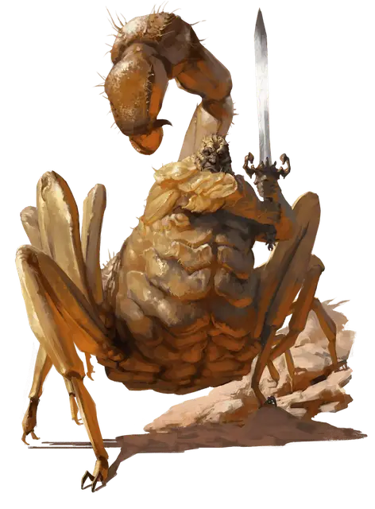

Муирал
Muiral
Большой Монстр, хаотично-злой

Класс Доспеха 16 (естественная броня)
Хиты 195 (23к10 + 69)
Скорость 50 футов
| мод | спас | ||
|---|---|---|---|
| СИЛ | 19 | +4 | +4 |
| ЛОВ | 11 | +0 | +0 |
| ТЕЛ | 16 | +3 | +8 |
| мод | спас | ||
|---|---|---|---|
| ИНТ | 18 | +4 | +9 |
| МДР | 13 | +1 | +1 |
| ХАР | 18 | +4 | +4 |
Навыки Атлетика +9, Восприятие +6, Магия +9, Скрытность +5
Чувства тёмное зрение 120 футов, пассивное Восприятие 16
Языки Общий, Гоблинский, Дварфийский, Подземный, Эльфийский
Опасность 13 (10000 опыта)
Бонус мастерства +5
Особенности
Использование заклинаний. . Муирал является заклинателем 13-го уровня. Его базовая заклинательная характеристика это Интеллект (Сл спасброска от заклинаний 17, +9 к атакам заклинаниями). У него подготовлены следующие заклинания волшебника:
• Заговоры (неограниченно): пляшущие огоньки [dancing lights], волшебная рука [mage hand], фокусы [prestidigitation], луч холода [ray of frost], электрошок [shocking grasp]
• 1-й уровень (4 ячейки): поспешное отступление [expeditious retreat], туманное облако [fog cloud], волшебная стрела [magic missile], щит [shield]
• 2-й уровень (3 ячейки): тьма [darkness] открывание [knock], видение невидимого [see invisibility], паук [spider climb]
• 3-й уровень (3 ячейки): восставший труп [animate dead], контрзаклинание [counterspell], молния [lightning bolt]
• 4-й уровень (3 ячейки): высшая невидимость [greater invisibility], превращение [polymorph]
• 5-й уровень (2 ячейки): оживление вещей [animate objects], силовая стена [wall of force]
• 6-й уровень (1 ячейка): сотворение нежити [create undead], окаменение [flesh to stone]
• 7-й уровень (1 ячейка): перст смерти [finger of death]
Легендарное сопротивление (3/День). Если муирал проваливает спасбросок, он может вместо этого сделать спасбросок успешным.
Действия
Мультиатака. . Муирал совершает три атаки: две длинным мечом и одну жалом.
Длинный меч. Рукопашная атака оружием: +9 к попаданию, досягаемость 5 фт., одна цель. Попадание: 13 (2к8 + 4) рубящий урон, или 15 (2к10 + 4) рубящий урон при ударе двумя руками.
Жало. . Рукопашная атака оружием: +9 к попаданию, досягаемость 10 фт., одно существо. Попадание: 9 (1к10 + 4) колющий урон. Цель должна совершить спасбросок Телосложения Сл 16, получая 27 (6к8) урона ядом при провале или половину этого урона при успехе.
Легендарные действия
Муирал может совершить 3 легендарных действия, на выбор из представленных ниже вариантов. За один раз можно использовать только одно легендарное действие, и только в конце хода другого существа. Муирал восстанавливает использованные легендарные действия в начале своего хода.
Наложить заговор. . Муирал накладывает заговоры.
Атакующий выпад (Стоит 2 Действия). . Муирал делает одну атаку длинным мечом с улучшенной досягаемостью в 10 футов.
Удар при отступлении (Стоит 3 Действия). Муирал перемещается со своей скоростью, не провоцируя атаки. Перед передвижением он может совершить одну атаку длинным мечом.
Описание
Муирал был опытным воином-человеком, долгое время служившим телохранителем Халастера. Его погружение в безумство началось, когда он попросил Безумного Мага обучить его искусству магии. Муирал изучил достаточно, чтобы превратить себя в чудовищного полускорпиона, став известным как Муирал Деформированный. После чего он уединился на уровне Подгорья, названное позже Рукавицей Муирала, изгнав и убив его первоначальных обитателей дроу. Теперь Муирал проводит своё время охотясь ради забавы на авантюристов и прочих чужаков. Долгие годы одиночества и влияние Халастера сделали его совершенно безумным.